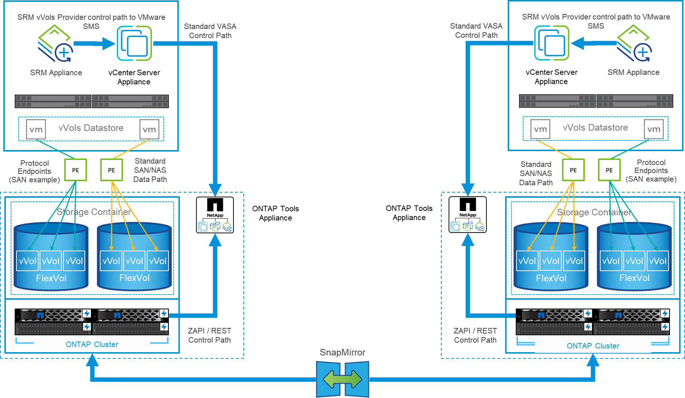
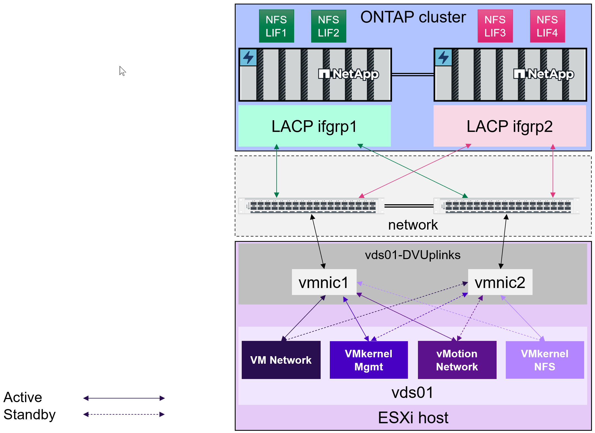
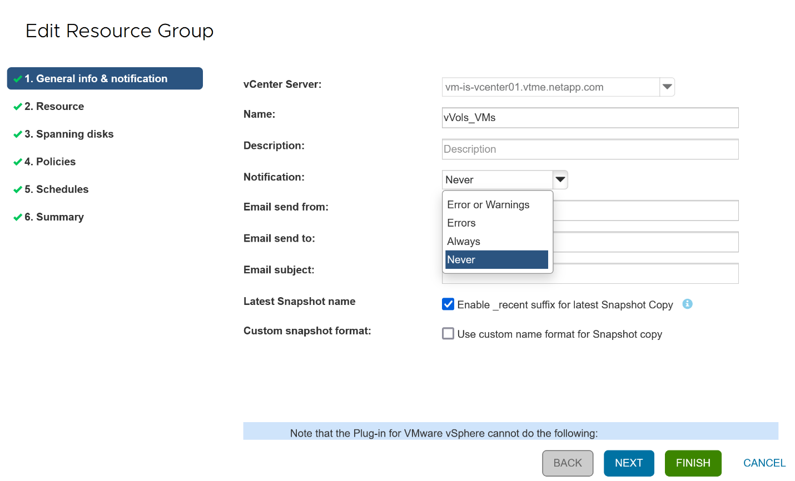

Microsoft SQL Server
Microsoft SQL Server
保護 vVols
 建議變更
建議變更
以下各節概述將 VMware vVols 與 ONTAP 儲存設備搭配使用的程序和最佳實務做法。
Vasa Provider 高可用度
NetApp VASA Provider 與 vCenter 外掛程式和 REST API 伺服器（先前稱為虛擬儲存主控台 [VSC] ）及儲存複寫介面卡一起執行、是虛擬應用裝置的一部分。如果 VASA Provider 不可用、則使用 vVols 的 VM 將繼續執行。但是、無法建立新的 vVols 資料存放區、而且 VVols 無法由 vSphere 建立或繫結。這表示無法開啟使用 vVols 的虛擬機器、因為 vCenter 將無法要求建立交換 vVol 。而且執行中的 VM 無法使用 VMotion 移轉至其他主機、因為 VVols 無法繫結至新主機。
Vasa Provider 7.1 及更新版本支援新功能、確保服務在需要時可用。其中包括監控 VASA Provider 和整合式資料庫服務的新看門狗程序。如果偵測到故障、它會更新記錄檔、然後自動重新啟動服務。
vSphere 管理員必須使用相同的可用度功能來設定進一步的保護、以保護其他關鍵任務 VM 免於軟體、主機硬體和網路中的故障。虛擬應用裝置不需要額外的組態即可使用這些功能、只要使用標準 vSphere 方法進行設定即可。NetApp 已測試並支援這些解決方案。
vSphere High Availability 可輕鬆設定為在發生故障時、在主機叢集中的其他主機上重新啟動 VM 。vSphere 容錯功能可建立次要 VM 、以持續複寫、並可隨時接管、進而提供更高的可用度。如需這些功能的詳細資訊、請參閱 "適用於 VMware vSphere 的 ONTAP 工具文件（設定 ONTAP 工具的高可用度）"以及 VMware vSphere 文件（請在 ESXi 和 vCenter Server 下尋找 vSphere 可用度）。
ONTAP 工具 VASA Provider 會即時自動備份 VVols 組態至託管 ONTAP 系統、其中 VVols 資訊儲存在 FlexVol Volume 中繼資料中。如果 ONTAP 工具應用裝置因任何原因而無法使用、您可以輕鬆快速地部署新的工具並匯入組態。如需 VASA Provider 恢復步驟的詳細資訊、請參閱本知識庫文章：
VVols 複寫
許多 ONTAP 客戶使用 NetApp SnapMirror 將傳統的資料存放區複寫到次要儲存系統、然後在發生災難時使用次要系統來恢復個別 VM 或整個站台。在大多數情況下、客戶都會使用軟體工具來管理這項作業、例如 NetApp SnapCenter 外掛程式 for VMware vSphere 等備份軟體產品、或是 VMware 的 Site Recovery Manager （搭配 ONTAP 工具中的儲存複寫介面卡）等災難恢復解決方案。
這項軟體工具需求對於管理 vVols 複寫更為重要。雖然有些方面可以由原生功能進行管理（例如、 VMware 託管的 vVols 快照會卸載到 ONTAP 、而會使用快速、有效率的檔案或 LUN 複本）、但一般而言、管理複寫和還原需要協調。VVols 的中繼資料受到 ONTAP 和 VASA Provider 的保護、但在次要站台使用時需要額外處理。
ONTAP 工具 9.7.1 搭配 VMware Site Recovery Manager （ SRM ） 8.3 版本、新增了災難恢復與移轉工作流程協調的支援、充分利用 NetApp SnapMirror 技術。
在 ONTAP 工具 9.7.1 的初始版 SRM 支援中、必須預先建立 FlexVols 並啟用 SnapMirror 保護、才能將它們作為 VVols 資料存放區的備份磁碟區。從 ONTAP 工具 9.10 開始、不再需要此程序。您現在可以將 SnapMirror 保護新增至現有的備份磁碟區、並更新您的 VM 儲存原則、以利用與 SRM 整合的災難恢復、移轉協調和自動化功能、來善用原則型管理。
目前、 VMware SRM 是 NetApp 唯一支援的 vVols 災難恢復與移轉自動化解決方案、 ONTAP 工具會先檢查是否存在已在 vCenter 註冊的 SRM 8.3 或更新版本伺服器、然後再允許您啟用 vVols 複寫、 雖然您可以利用 ONTAP 工具 REST API 來建立自己的服務。
使用 SRM 複寫 VVols

MetroCluster 支援
雖然 ONTAP 工具無法觸發 MetroCluster 切轉、但它確實支援採用統一 vSphere 都會儲存叢集（ VMSC ）組態的 NetApp MetroCluster 系統來支援 VVols 備份磁碟區。MetroCluster 系統的移轉是以正常方式處理。
雖然 NetApp SnapMirror Business Continuity （ SM-BC ）也可作為 VMSC 組態的基礎、但 VVols 目前不支援這項功能。
如需 NetApp MetroCluster 的詳細資訊、請參閱以下指南：
VVols 備份總覽
有幾種方法可以保護 VM 、例如使用客體內備份代理程式、將 VM 資料檔案附加至備份 Proxy 、或使用定義的 API （例如 VMware VADP ）。VVols 可以使用相同的機制來保護、許多 NetApp 合作夥伴也支援 VM 備份、包括 vVols 。
如前所述、 VMware vCenter 託管快照會卸載至節省空間且快速的 ONTAP 檔案 /LUN 複本。這些資料可用於快速手動備份、但 vCenter 最多可限制為 32 個快照。您可以使用 vCenter 拍攝快照、並視需要進行還原。
從 SnapCenter Plugin for VMware vSphere （ SCV ） 4.6 開始、搭配 ONTAP 工具 9.10 及更新版本使用時、新增了對使用 ONTAP FlexVol Volume 快照的 vVols 型虛擬機器的損毀一致備份與還原支援、並支援 SnapMirror 和 SnapVault 複寫。每個磁碟區最多可支援 1023 個快照。此外、選擇控制閥也可以使用 SnapMirror 搭配鏡射儲存庫原則、在次要磁碟區上儲存更多快照、並保留更長的時間。
vSphere 8.0 支援是採用分離式本機外掛程式架構的 4.7 號選擇控制閥推出的。vSphere 8.0U1 支援已新增至 4 號選擇控制閥 4.8 、該選擇控制閥已完全移轉至新的遠端外掛程式架構。
適用於 VMware vSphere 的 VVols Backup 搭配 SnapCenter 外掛程式
有了 NetApp SnapCenter 、您現在可以根據標籤和 / 或資料夾、為 vVols 建立資源群組、以自動利用 ONTAP 的 FlexVol 快照來執行 vVols 型 VM 。這可讓您定義備份與還原服務、以便在虛擬機器在環境中動態佈建時、自動保護這些虛擬機器。
適用於 VMware vSphere 的 SnapCenter 外掛程式部署為登錄為 vCenter 擴充功能的獨立應用裝置、可透過 vCenter UI 或 REST API 進行管理、以實現備份與還原服務自動化。
架構SnapCenter

由於其他 SnapCenter 外掛程式在撰寫本文時尚未支援 vVols 、因此我們將著重於本文中的獨立部署模型。
由於 SnapCenter 使用 ONTAP FlexVol 快照、因此 vSphere 上不會產生任何額外負荷、也不會像傳統 VM 使用 vCenter 託管快照時所見到的效能損失。此外、由於選擇控制閥的功能是透過 REST API 公開、因此使用 VMware Aria Automation 、 Ansible 、 Terraform 等工具、以及幾乎任何其他能夠使用標準 REST API 的自動化工具、都能輕鬆建立自動化工作流程。
如需SnapCenter 有關靜態API的資訊、請參閱 "REST API總覽"
如需SnapCenter VMware vSphere REST API的靜態外掛程式資訊、請參閱 "VMware vSphere REST API的VMware外掛程式SnapCenter"
最佳實務做法
下列最佳實務做法可協助您充分發揮 SnapCenter 部署的效益。
|
|
|
|
|
|
資源群組通知選項
